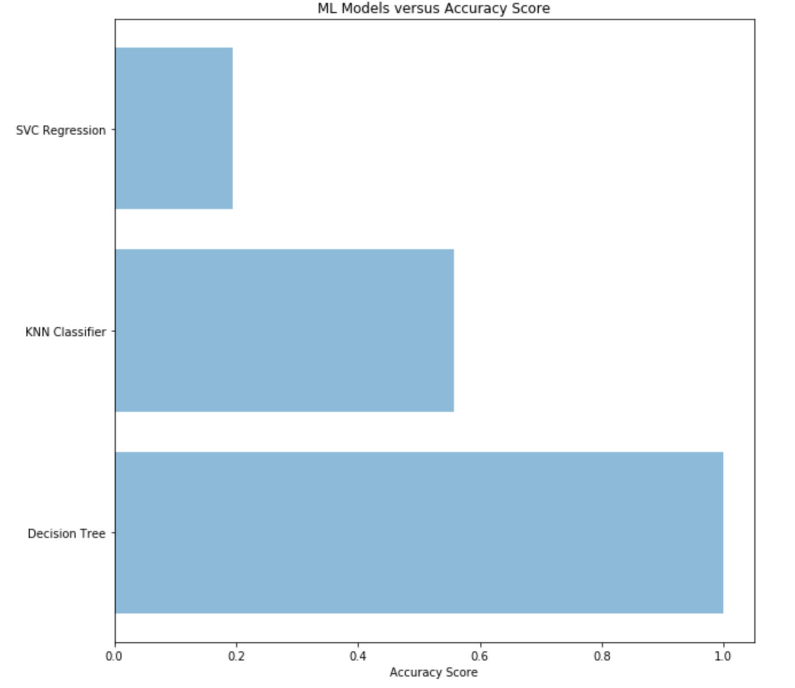
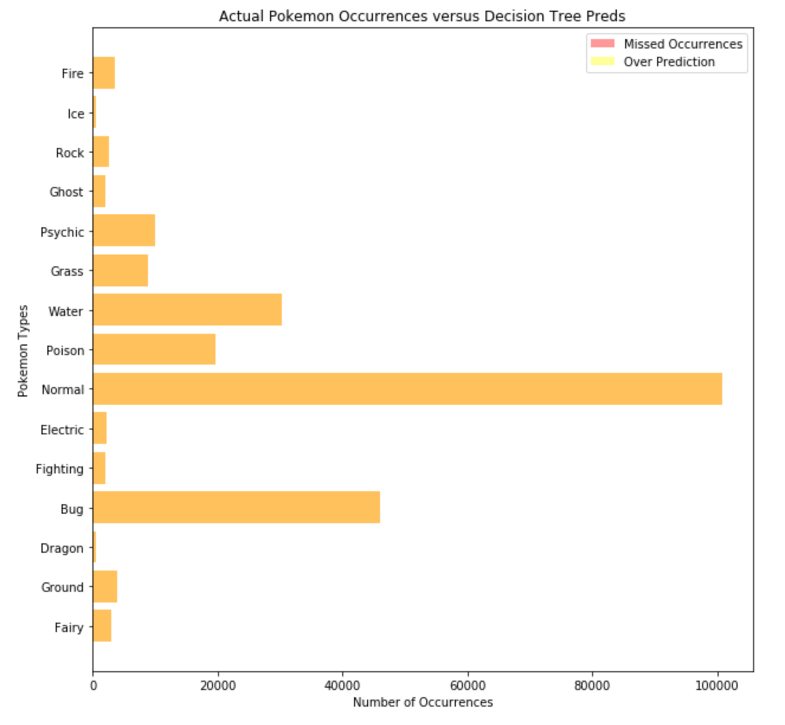
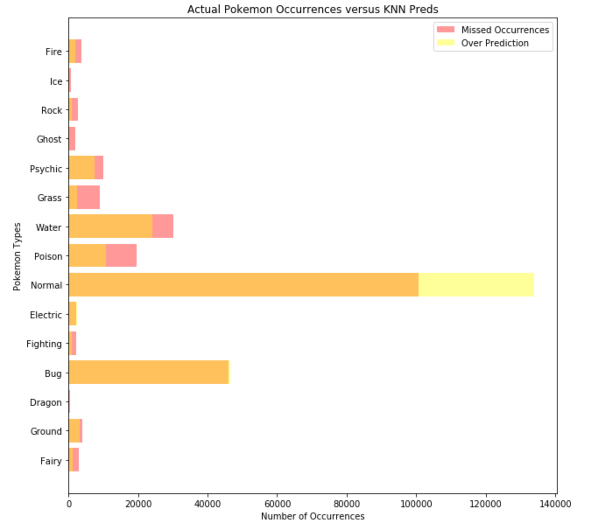

Predictions
Feature Selection
After splitting our data, we used forward feature selection in order to look for features with high coefficients within our dataset. Through this process, we got four variables back: longitude, sunrise, sunset, and population density. However, the process that we used for feature selection is specifically used for numeric dependent values, and our dependent value--Pokemon Type--is categorical. Since the methods didn’t correlate, we did not use any of the suggested features from our process. Instead, we used it as a data exploration step in order to further look into the data.
There are also some possible reasons for these high correlations. While investigating the data, we found that the city labels were often quite inaccurate, with many Seattle data points being labeled as Los Angeles. We noticed this was a difference in latitude, which led us to believe that the creator of the data set must have sorted cities by longitude instead. This places greater precedence on the longitude value, rather than latitude.
Population density may be an effect because of Pokemon Go’s game mechanics. Developers (and avid players) have always maintained that the more Pokemon Go players in one area, the more Pokemon will spawn. This inclusion of population density would make sense if this is true. Lastly, sunrise and sunset may be times during the day in which more people are active on Pokemon Go. However, this is purely conjecture.
While we did not go with the features that were returned, we did use it as a jumping off point and decided to look into Pokemon type from there.
Modeling
We decided to go with three different models and three different approaches. Of the available methods, we chose to use Decision Trees, K Nearest Neighbors, and SVC Regression. We chose the first two because of what we learned in class, and we chose the latter because it is specifically used for working with categorical data.
Before creating our models, we used Grid Search in order to find the optimal depth for our Decision Tree and the optimal number of neighbors for our KNN approach. When we ran these grid searches, however, we found that the results were quite unsatisfactory. For Decision Tree, we got a result of a max depth of 1, with an accuracy score of 18.9%. For KNN, we got 9 neighbors with an accuracy score of 21.8%. Since these were abnormally low, we decided to instead go with a depth of 15 for Decision Tree and n = 8 for KNN.
Finally, we created our models with the above parameters. For Decision Tree and KNN, we used the entirety of our data set. However, for SVC Regression, we were unable to use the whole dataset, and instead used 1% of our data (which is ~3000 rows). We did this because the model took too long to run when using all 300,000 rows, so we opted to create a smaller sample instead.
Visualizations and Conclusions
After running our models, we got 3 very different accuracy scores. For Decision Tree, we were surprised to get an accuracy score of 100%. For KNN, we got an accuracy score of 55.8%. And for SVC Regression, we got an accuracy score of 19.4%.
 Our 3 different accuracy scores.
Out of our 3 accuracy scores, Decision Tree was by far the most accurate. In fact, we were quite shocked that we managed to get 100% accuracy. We assume that the high accuracy is attributed to the depth we chose, as well as the sheer amount of data that we provided it. We were a bit concerned with possibly having overfit the data, but since our training data and test data was split, modeling the decision tree and the test results were independent of each other.

As seen in the graph above, the orange bar represents the data that was accurately predicted. Since there is no yellow or red in the bar chart, it means our Decision Tree model predicted 100% of the data correctly.
The next highest accuracy score we got was K Nearest Neighbor at 55.8%. Since we were not as accurate with this model, it actually has some more interesting conclusions.

As seen in the graph above, this model did better in some places than it did others. KNN grossly over-predicted the number of Normal type Pokemon that would occur. However, this makes sense because of how much more common they are than the rest of the other Pokemon types. Electric and Bug types were the other two that were over-predicted, but not nearly as much. The remaining types were under-predicted, with the model missing a lot of the data. Some types fared better than others--the model got most Psychic, Water, and Ground types correctly. However, it missed practically all of the Dragon and Ghost types, and more than half of Rock, Grass, and Fairy.
Looking at these severely under-predicted types, however, yields interesting conclusions. Since Pokemon Go, at the time this data was collected, only had the original first generation of Pokemon, there are far fewer Dragon, Ghost, and Fairy types. This is because Dragon types were not as common in the first few iterations of the Pokemon franchise, and Fairy is a type that only came into existence in 2013 (whereas the rest of the franchise has existed since 1998). This could be why there are far fewer of these Pokemon, which also led to less data for the model to use for its predictions.
Finally, our SVC model had a pretty dismal accuracy score of 19.4%. We attribute that mostly to the fact that we used a sample subset of the data, as opposed to the entirety of the data like we did with the previous two models. This subset was also very small--only 1% of the entire data set. This most likely had a large effect on the model's accuracy, but our inexperience using the SVC Regression model may have also played into it (despite our best efforts).
Overall, we can conclude that there are far more Normal type Pokemon in Pokemon Go than any others in the game. The second and third largest--Bug and Water--don't even come close. While this data set is fairly dated (in terms of the lifespan of the Pokemon Go app), it is still interesting to see the distribution of types around the globe.
Thank you for having taken the time to read our report. If you have any concerns feel free to email us at pokemon-go@bwalchen.com